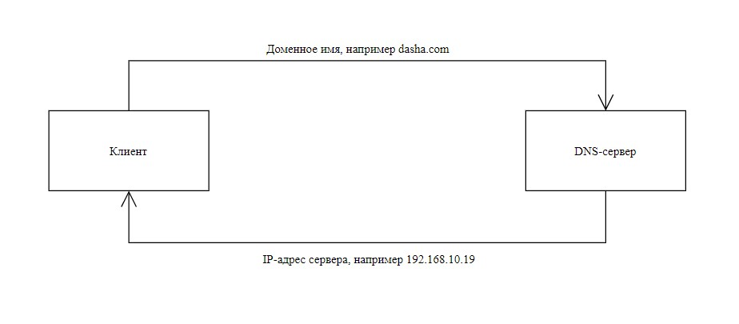

Изучение и анализ работы системы распределения имён с помощью диагностических утилит операционной системы Windows и программных средств, позволяющих контролировать сетевой трафик на примере программы Network Monitor.
Домен, доменное имя или доменный адрес - уникальный адрес интернет-ресурса, представленный в символьном виде. Если проще, то название сайта. Домен имеет чёткую структуру, рассмотрим на примере FQDN standupclub.oganisyan.ru. FQDN (fully qualified domain name , полностью определённое имя домена) - имя домена, которое не имеет неопределённостей, то есть содержит имена всех вышестоящих в иерархии доменов (родительских доменов).
| Домен второго уровня | Домен первого (верхнего) уровня | Доменная зона |
| oganisyan | standupclub | ru |
Домены разделяются между собой точками и могут содержать в себе буквы, цифры и некоторые символы (без пробелов), их может быть бесконечное количество. Точка является доменом нулевого уровня.
IP-адрес (Internet Protocol) - уникальный числовой идентификатор устройства в сети. Адрес может быть представлен в версии IPv4 (32-битное число, эквивалентное четырём 8-битным числам в интервале от 0 до 255, например 192.168.10.19) или IPv6 (128-битное число, эквивалентное восьми 16-битным числам, например 2001:0db8:85a3:0000:0000:8a2e:0370:7334). Версия IPv6 появилась из-за большого количества интернет-ресурсов.
IP-адрес состоит из номера сети и номера узла внутри этой сети. IP-адреса бывают внешними (белыми, глобальными) и внутренними (серыми, локальными). Внешний используется во время доступа в интернет, идентифицирует пользователя в сети и используется маршрутизаторами, внутренний - работает в пределах локальной сети.
Машины могут объединяться в подсети для подключения к Интернету и взаимодействовать друг с другом, это сделано, прежде всего, из соображений безопасности локальной сети, в неё будет нельзя войти извне, и удобства маршрутизации. Для выхода в интернет, к IP-адресам такой сети добавляется маска подсети, состоящая из четырёх 8-битных значений в диапазоне от 0 до 255, разделённых точками (Например, 255.0.0.0).
Узнать IP-адрес устройства и маску подсети можно с помощью утилиты ipconfig в командной строке.
DNS (Domain Name System, система распределения имён) - это распределённая система, которая занимается разрешением доменных имён в IP-адреса и наоборот. Таким образом, DNS позволяет браузеру узнать физический адрес машины, с которой загружается сайт. Система работает на физических устройствах, а не в виртуальном пространстве и работает по принципу, представленному на рисунке ниже.
Работу DNS-сервера демонстрирует утилита nslookup командной строки.
Создать и настроить Capture в программе Network Monitor. Как это сделать, написано в теоретическом материале.